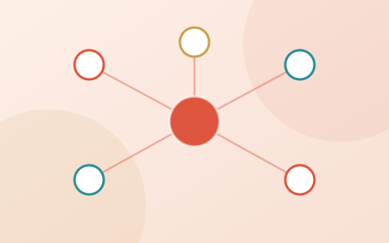

Hi, I'm Adeel, an IT engineer working across cybersecurity, networking, cloud, and AI.
I'm a final-year Information Technology student at the Islamic University of Madinah, studying on a fully-funded Saudi Government scholarship awarded for academic excellence. My goal is simple but ambitious: to design, secure, and scale the digital systems the world depends on from the network layer all the way up to the cloud. I pair strong foundations in networking and security with hands-on cloud and AI engineering, and I've already co-authored four peer-reviewed research papers spanning network security, federated learning, and intelligent systems. Beyond research, I build. I've engineered complete systems from Raspberry Pi hardware to live cloud dashboards, earned Cisco CCNP Enterprise certifications in Core Networking and Advanced Routing, and I sharpen my practical skills every day through hands-on TryHackMe security labs and AWS cloud training. Whether it's hardening a network, deploying to the cloud, or applying AI to real-world problems, I bring curiosity, discipline, and a relentless drive to learn and I'm always eager to take on research, scholarship, and professional opportunities where I can contribute, grow, and make an impact.
Research & Publications
Publications
Peer-reviewed, in-review, and submitted work.
Privacy Leakage in Federated Learning: Gradient-Based Client Identity Inference and Defense Analysis for Secure Vehicular Networks
IEEE 104th Vehicular Technology Conference (VTC2026-Fall)
Balancing Spatial Urgency and Content Popularity for Edge Caching in Vehicular Networks
Springer Nature — Discover Telecommunications
XAI-SDN: A Lightweight, Interpretable DDoS Detection System for SDN Using Entropy Feature Augmentation and SHAP
Submitted to a peer-reviewed journal
Adaptive Multi-Factor Trust Aggregation for Byzantine-Robust Federated Learning in IoT Networks
Submitted to a peer-reviewed journal
Research Interests

Projects & Repositories
Featured work
System architectures from my research. Open a summary, or view the code.

XAI-SDN — Explainable DDoS Detection
A lightweight, interpretable DDoS-detection system for software-defined networks. Flows are summarised with an O(1) rolling-entropy feature, classified by a Random Forest, and every decision is explained with SHAP — reaching 99.99% accuracy at sub-millisecond inference while feeding a real-time mitigation loop.

TrajectoryCache — Vehicular Edge Caching
A mobility-aware content-caching policy for vehicular (V2X) named-data networks. It balances each item's spatial urgency against its temporal popularity under SUMO-style platoon traffic with GPS noise, making cache-eviction decisions in under 43 microseconds.

Byzantine-Robust Federated Learning
A Byzantine-robust aggregation scheme for federated learning in IoT. A cloud trust engine fuses cosine-similarity and historical-reputation signals to score each client, filtering poisoned updates before they corrupt the global model.

CXAI-RCA — Causal Root-Cause Analysis
A causal-and-explainable pipeline for cyber-attack root-cause analysis in cloud-native microservices. Telemetry builds a service-dependency graph; a GraphSAGE detector flags intrusions; NOTEARS causal discovery traces the propagation path; and SHAP + counterfactuals produce an explainable incident report.
All Repositories · live from GitHub
Experience & Education
Where I've worked & studied
Experience
Education
Skills & Certifications
Tools & credentials
Technical Skills
Certifications
CCNP Enterprise: Core Networking
Cisco Networking Academy (Open University Cisco ITC) — L2 redundancy, EIGRP & advanced OSPF, eBGP, multicast & QoS, VPNs, secure infrastructure, and network automation.
CCNP Enterprise: Advanced Routing
Cisco Networking Academy — advanced routing, route redistribution, path control, and enterprise VPN technologies.
AWS Certified Solutions Architect Associate (SAA-C03) Course
Adrian Cantrill's SAA-C03 VPC, EC2, S3, IAM, RDS, CloudFormation, HA/FT architectures, serverless, and cost optimisation.
Cisco Certified Network Associate (CCNA)
Routing & switching, OSPF/EIGRP, VLANs, ACLs.
Contact
Let's work together
Actively seeking a fully-funded PhD position and open to research collaborations.
Curriculum Vitae
Adeel Ahmad
github.com/adeliusa486 · linkedin.com/in/adeel-ahmad-5a041b237
Summary
Final-year Information Technology undergraduate at the Islamic University of Madinah with hands-on experience in networking, AWS cloud computing, and applied machine learning. Co-author of an IEEE conference paper and builder of full systems from hardware to dashboard.
Education
Saudi Government-funded scholarship for academic excellence. View Transcript
Technical Skills
Programming: Python, Java, SQL, Bash, MATLAB
AI & Machine Learning: PyTorch, scikit-learn, NumPy, OpenCV, SHAP
Networking: CCNA, OSPF, RIP, EIGRP, VLANs, ACLs, Wireshark, Packet Tracer
Cloud & DevOps: AWS, CloudFormation, Terraform, Ansible, Docker, Linux
Simulation & Tools: GNS3, SUMO, Git, Raspberry Pi, Flutter
Experience
- Conducted applied research in network security, federated learning, and intelligent systems, leading to multiple peer-reviewed publications.
- Built an AWS-powered, multilingual crowd-management MVP for Al-Masjid an-Nabawi with an operations dashboard.
- Owned the full stack across real-time navigation, crowd analysis, and cloud architecture.
- Built an offline Raspberry Pi smart cane; selected into the hackathon acceleration phase.
Publications
- Accepted: "Privacy Leakage in Federated Learning…", IEEE VTC2026-Fall.
- In peer review: "Balancing Spatial Urgency and Content Popularity for Edge Caching in Vehicular Networks", Springer Nature, Discover Telecommunications.
- Submitted: "XAI-SDN: A Lightweight, Interpretable DDoS Detection System for SDN…".
- Submitted: "Adaptive Multi-Factor Trust Aggregation for Byzantine-Robust Federated Learning in IoT Networks".
Activities & Honours
- Saudi Government-funded scholarship recipient, Islamic University of Madinah (Mar 2023).
- Cisco NetAcad Network Security badge (completed); AWS Certified Solutions Architect – Associate (SAA-C03) course completed (Adrian Cantrill); preparing for CCNA.
- Currently completing hands-on cybersecurity labs on TryHackMe.
Languages
Urdu (Native), Punjabi (Native), English (B2), Arabic (Beginner)